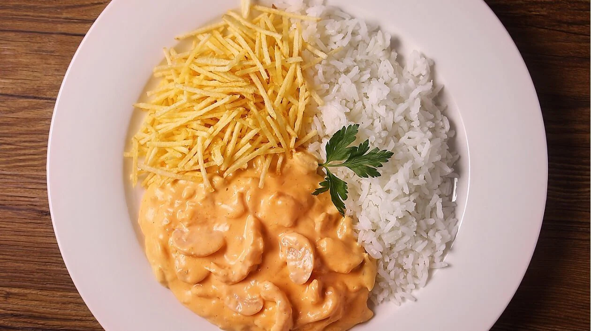

Strogonoff Recipe

Strogonoff is a russian plate consisted in some meat (chicken or meat) dipped in a mix of ketchup with whipping cream. It's very popular in Brazil and also very tasty.
This recipe is described and provided by TUDOGOSTOSO.
Ingredients needed:
- 3 chicken breast cutted in cubes
- 1 garlic
- salt and pepper
- 1 onion
- ketchup
How to do
- First, in a pan put the chicken, the garlic, the mostard, the salt and pepper.
- Then, melt the butter and saute the onion